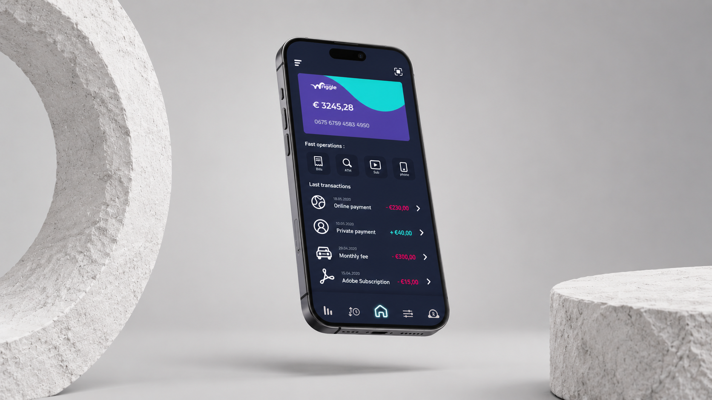
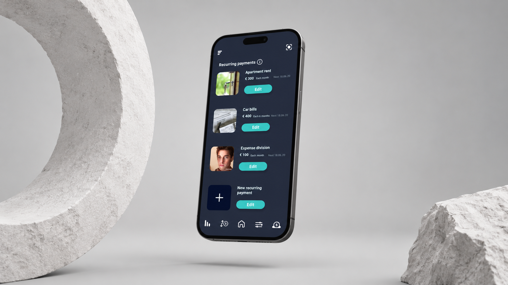
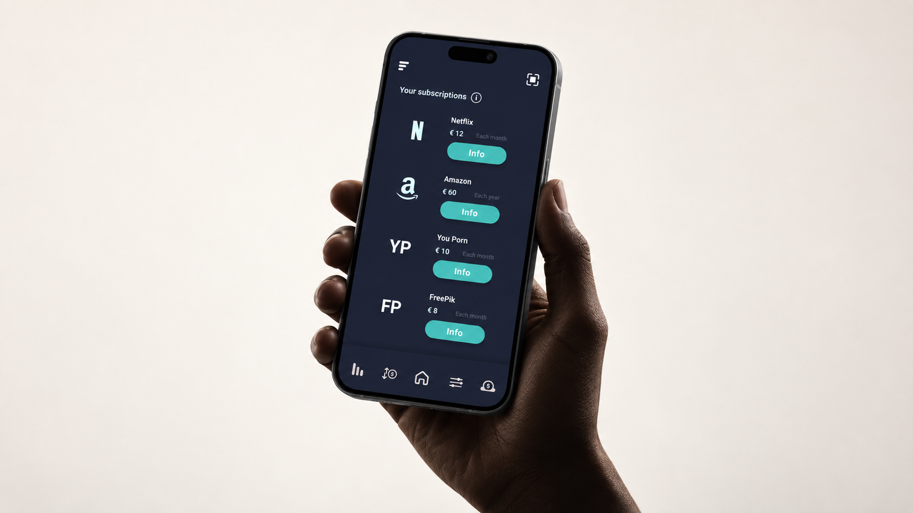
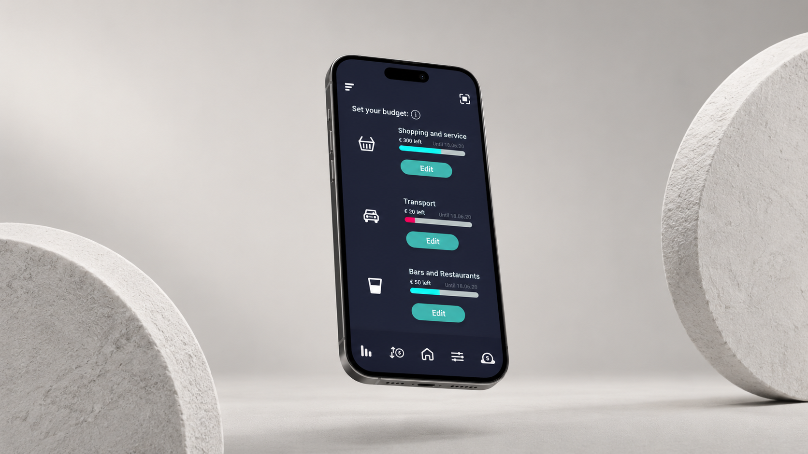
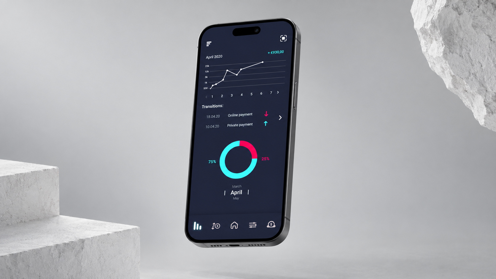

Wriggle
Rethinking digital banking around the everyday needs of younger users.

Context
Banking can often feel complex and disconnected from the everyday needs of younger users. Wriggle explores how a digital banking experience could make managing money simpler, clearer and more engaging.
Approach
The project started with user research through surveys and interviews to understand young people’s financial habits and needs. Insights were clustered and translated into an ecosystem map, user needs and key features, before moving into UI design and digital prototyping.

The starting question
How might we make digital banking more engaging and easier to use for young users?
- Year
- 2020
- My role
- UX/UI Design · User Research · Concept Development · Prototyping

Outcome
Wriggle is a mobile banking concept that brings everyday financial management into one intuitive experience, helping users track expenses, set budgets, manage subscriptions, automate recurring payments and save more easily.


See also

Neodip